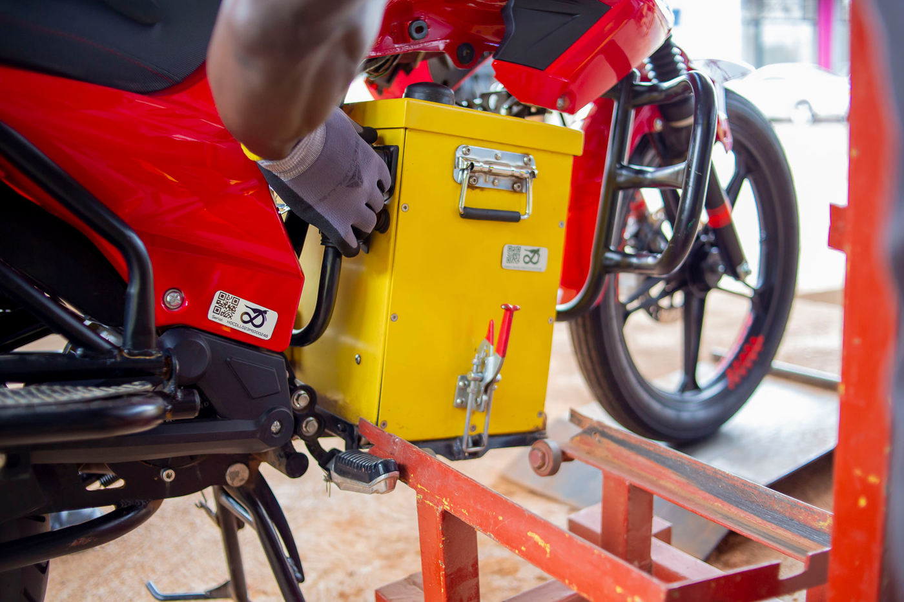
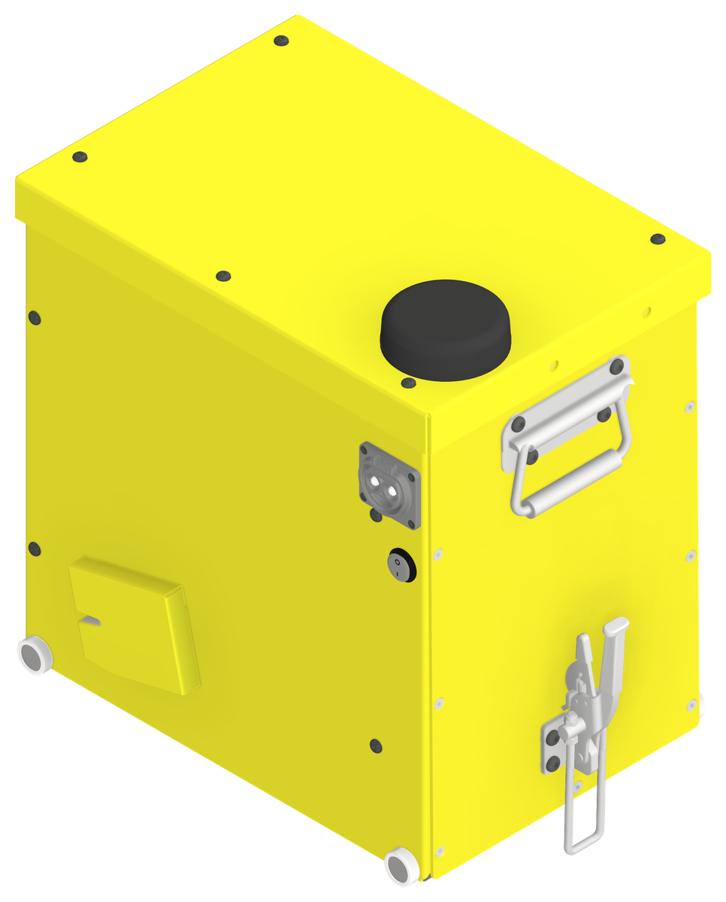
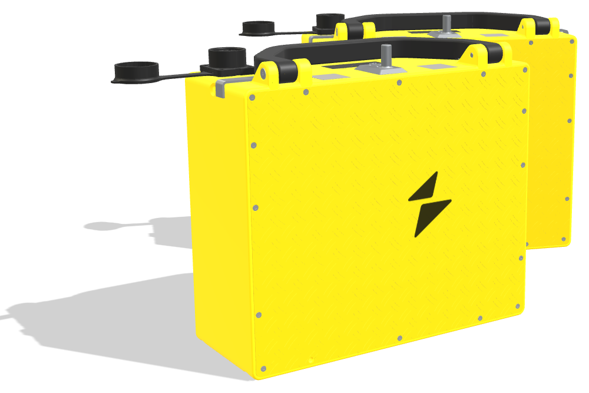

5 yrs
designed first life · norm 1–2 years
Most swap batteries last one to two years. Ours are designed for a five-year first life. Our own cell selection, pack design and BMS give us full control of charge speed and health, so each pack keeps earning for longer.

One pack per bike. A 24-cell LFP module built in-house in Kigali, now running on the Ampersand BMS.

Two packs per bike, connected in parallel. Either pack can be swapped alone. The Ampersand BMS and the VCTU are built in.

Drag to rotateEvery generation works with the stations already on the network. A larger pack, AMP XL, is in development.
| Item | HM1 | MK2 |
|---|---|---|
| Packs per bike | 1 | 2, in parallel |
| Weight per pack | 44 kg | 15.5 kg |
| Energy | ~3.0 kWh | 3.67 kWh per bike |
| Chemistry | LFP | LFP |
| Designed first life | 5 years · 2,500 cycles | |
| Protection | IP66 enclosure, IP67 internals | IP67 · 1 m drop tested |
| BMS and telematics | Ampersand BMS and VCTU, designed in-house | |
| Certification | UN38.3 | |